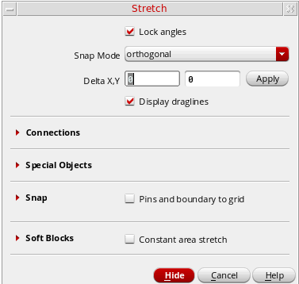
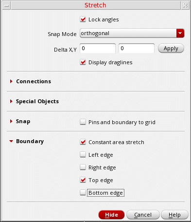
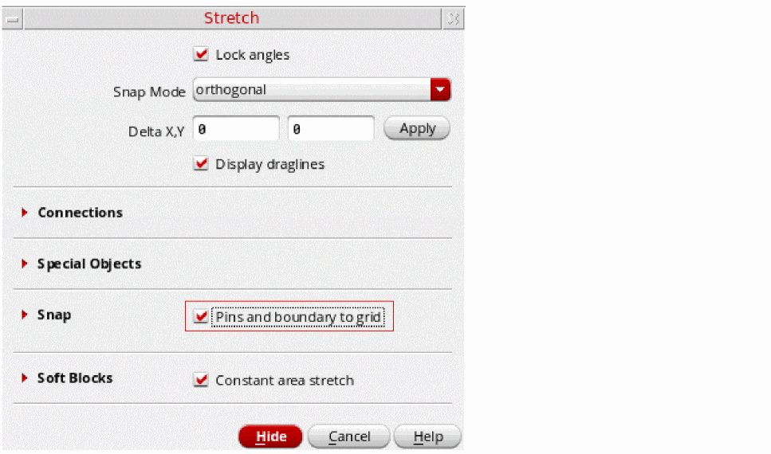
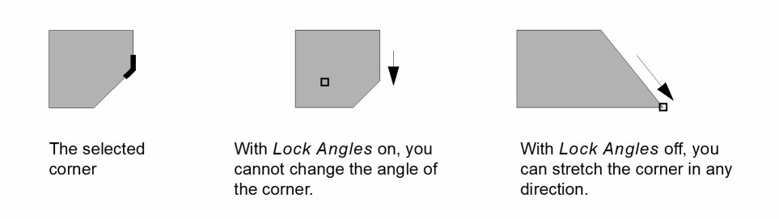

Maintaining the Area of a Soft Block during Stretch
The Use Constant Area Stretch option on the Stretch form keeps the area of soft blocks and top-design PR boundary constant while their boundaries are stretched.
You can specify the edges that can be adjusted during the stretch operation.
The only difference between top-design PR boundary stretch and soft block stretch is that in case of soft block stretch, the soft block origin moves during the stretch, whereas in case of PR boundary stretch, the origin of the PR boundary does not move. In addition, when the PR boundary being stretched is at the top level, the instances inside the PR boundary do not move.
Consider the following example of constant area stretch of a soft block.
The block in the picture above has an area of 100 square units. If you specify that edge 1 is an adjustable edge [figure (a)] and then increase the width of the block from 10 to 20 [figure (b)], then the Stretch command automatically adjusts the free edge from 10 down to 5 in order to maintain a constant area of 100 square units [figure (c)].
-
From the layout window menu bar, choose Edit - Stretch and press
F3to display the Stretch form.
 -
Select the Constant area stretch option. The form updates to list the adjustable edges.
 - Select Top edge to make it adjustable.
- Select the soft block or top-design PR boundary that you want to change and perform the stretch.
Changing the Angle of a Corner
To change the angle of a corner by stretching,
-
With Level-1 Editing mode enabled, choose Edit – Stretch from the layout window menu bar.
If the Stretch form does not appear automatically, pressF3to display it.
 -
Turn off Lock Angles and turn on Snap – Pins and boundary to grid to snap the place and route boundary or pin to a grid.
See the Swap Components Form -
Click the corner you want to stretch and then move your mouse to stretch the shape as required.

Related Topics
Return to top